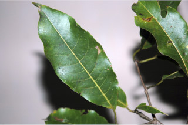
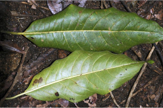
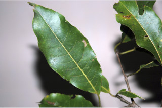
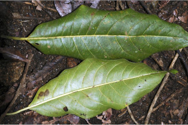

Large trees, buttressed, up to 35 m tall.
35 ಮೀ. ಎತ್ತರದವರೆಗೆ ಬೆಳೆಯುವ ಆನಿಕೆಯುಳ್ಳ ದೊಡ್ಡ ಗಾತ್ರದ ಮರಗಳು.
35 മീറ്റര് ഉയരത്തില് വളരുന്ന, വപ്രമൂലത്തോടുകൂടിയ വന്മരങ്ങള്.
பெரிய மரங்கள், தாங்கு வேர்களுடையவை (பட்ரஸ்டு), 35 மீ. உயரம் வரை வளரக்கூடியது.
Trunk with clear bole; bark grey, smooth; blaze brown.
ಕಾಂಡಗಳು ಸ್ಪಷ್ಟವಾದ ಬುಡವನ್ನು ಹೊಂದಿರುತ್ತವೆ;ತೊಗಟೆ ಬೂದು ಬಣ್ಣ ಹೊಂದಿದ್ದು ಕಚ್ಚು ಮಾಡಿದ ಜಾಗ ಕಂದು ಬಣ್ಣದಲ್ಲಿರುತ್ತದೆ.
കൃത്യമായ തായ്ത്തടി; നരച്ചനിറത്തിലുളള, മിനുസമാര്ന്ന പുറംതൊലി; വെട്ട്പാടിന് തവിട്ട് നിറം.
மரத்தின் தண்டு குறுக்குவெட்டுத் தோற்றத்தில் ஒழுங்கான வளையம் போன்றது; மரத்தின் பட்டை சாம்பல் நிறமானது, வழுவழுப்பானது; உள்பட்டை ப்ரவுன் நிறமானது.
Branchlets subterete, glabrous.
ಕಿರುಕೊಂಬೆಗಳು ಉಪ- ದುಂಡಾಗಿದ್ದು ರೋಮರಹಿತವಾಗಿರುತ್ತವೆ.
ഏതാണ്ട് ഉരുണ്ടതും, അരോമിലവുമായ ഉപശാഖകള്.
சிறிய நுனிக்கிளைகள் குறுக்குவெட்டுத் தோற்றத்தில் சிறிது வளையம் போன்றது, உரோமங்களற்றது.
Leaves simple, opposite or subopposite and alternate; petiole 1.3-1.9 cm long, slightly canaliculate above; lamina 5-11 x 2.2-5 cm narrow elliptic-oblong or lanceolate, apex acute to gradually acuminate, base asymmetricaly attenuate or rounded, margin entire, coriaceous, pubescent when young and later glabrous, midrib nearly flat; secondary_nerves 12-15, gradually curved; tertiary_nerves minutely reticulo-percurrent.
ಎಲೆಗಳು ಸರಳವಾಗಿದ್ದು, ಅಭಿಮುಖ ಅಥವಾ ಉಪ-ಅಭಿಮುಖವಾಗಿ ಜೋಡಿತವಾಗಿರುತ್ತವೆ;ತೊಟ್ಟುಗಳು 1.3-1.9 ಸೆಂ.ಮೀ. ಉದ್ದವಿದ್ದು ಮೇಲ್ಭಾಗದಲ್ಲಿ ಸ್ವಲ್ಪಮಟ್ಟಿಗೆ ಕಾಲುವೆ ಗೆರೆಯನ್ನು ಹೊಂದಿರುತ್ತವೆ; ಪತ್ರಗಳು 5 - 11 X 2.2 – 5 ಸೆಂ.ಮೀ. ಗಾತ್ರ ಹೊಂದಿದ್ದು ಸಂಕುಚಿತ ಧೀರ್ಘ ಚತುರಸ್ರಾಕಾರ ಅಥವಾ ಭರ್ಜಿಯಾಕಾರದಲ್ಲಿದ್ದು ಚೂಪಾದ ಅಥವಾ ಕ್ರಮೇಣ ಚೂಪಾಗುವ ಮಾದರಿಯ ತುದಿ ಹಾಗೂ ಅಸಮವಾದ ಒಳಬಾಗಿದ ಅಥವಾ ದುಂಡಾದ ಬುಡವನ್ನು ಹೊಂದಿರುತ್ತವೆ;ಪತ್ರಗಳು ತೊಗಲನ್ನೋಲುವ ರೀತಿಯಲ್ಲಿದ್ದು ಅಂಚು ನಯವಾಗಿರುತ್ತದೆ;ಪತ್ರಗಳು ಎಳೆಯದಾಗಿದ್ದಾಗ ಮೃದುತುಪ್ಪಳದಿಂದ ಕೂಡಿದ್ದು ಬಲಿತಾಗ ರೋಮರಹಿತವಾಗಿರುತ್ತವೆ;ಮಧ್ಯನಾಳವು ಬಹುಮಟ್ಟಿಗೆ ಚಪ್ಪಟೆಯಾಗಿರುತ್ತದೆ; ಎರಡನೇ ದರ್ಜೆಯ ನಾಳಗಳು 12 ರಿಂದ 15 ಜೋಡಿಗಳಿದ್ದು ಕ್ರಮೇಣವಾಗಿ ಬಾಗಿರುತ್ತವೆ;ಮೂರನೇ ದರ್ಜೆಯ ನಾಳಗಳು ಸೂಕ್ಷ್ಮ ಜಾಲಬಂಧ ನಾಳ ವಿನ್ಯಾಸದಲ್ಲಿದ್ದು ಎಲೆದಿಂಡಿಗೆ ಅಡ್ಡವಾಗಿ ಕೂಡುವಂತಹವು.
ഇലകള് ലഘുവും, സമ്മുഖമോ, ഉപസമ്മൂഖമോ, ഏകാന്തര ക്രമത്തിലോ ആണ്; പത്രവൃന്തത്തിന് 1.3 സെ.മീ മുതല് 1.9 സെ.മീ വരെ നീളമുളളതും, മുകളില് ചെറുചാലോട് കൂടിയതുമാണ്; പത്രഫലകത്തിന് 5 സെ.മീ മുതല് 11 സെ.മീ വരെ നീളവും 2.2 സെ.മീ മുതല് 5 സെ.മീ വരെ വീതിയുമുണ്ട്, വീതികുറഞ്ഞ ദീര്ഘ വൃത്തീയ - ആയതാകാരമോ കുന്താകാരമോ ആണ്, പത്രാഗ്രം കൂര്ത്തതു തൊട്ട് ചെറുവാലോട് കൂടിയതോ ആണ്, പത്രാധാരം അസമമായി ആപ്പാകാരത്തിലോ വൃത്താകാരത്തിലോ ആണ്, അവിഭജിതം, ചര്മ്മില പ്രകൃതം, ഇളതായിരിക്കുമ്പോള് ചെറുതായി രോമിലമാണ്, പിന്നീട് അരോമിലമാകുന്നു, മുഖ്യസിര ഏതാണ്ട് പരന്നാണിരിക്കുന്നത്; സാവധാനത്തില് വളഞ്ഞുപോകുന്ന 12 മുതല് 15 വരെ ദ്വിതീയ ഞരമ്പുകള്; സൂക്ഷമ ജാലികാ-പെര്കറന്റ് രീതിയിലുളള ത്രിതീയ ഞരമ്പുകള്.
இலைகள் தனித்தவை, எதிரடுக்கமானவை அல்லது கிட்டதட்ட எதிரடுக்கமானவை மற்றும் சுழல் போல் அமைந்தவை; இலைக்காம்பு 1.3-1.9 செ.மீ. நீளமானது, இலைக்காம்பு குறுக்குவெட்டுத் தோற்றத்தில் சிறிது கேனாலிகுலேட்; இலை அலகு 5-11 X 2.2-5 செ.மீ., குறுகிய நீள்வட்ட-நீள்சதுர அல்லது ஈட்டி வடிவமானது, அலகின் நுனி கூரியது முதல் அதிக்கூரியது, அலகின் தளம் சமமற்ற அட்டனுவேட் அல்லது வட்டமானது; அலகின் விளிம்பு முழுமையானது, கோரியேசியஸ், முதிரும் வரை உரோமங்களுடையது மற்றும் பிறகு உரோமங்களற்றது, மையநரம்பு அலகின் பரப்பிற்கு இணையானவை; இரண்டாம் நிலை நரம்புகள் 12-15 ஜோடிகள், நன்கு படிப்படியாக வளைந்தது; மூன்றாம் நிலை நரம்புகள் வலைப்பின்னல்-பெர்க்கரண்ட்.
Inflorescence axillary, panicled spikes, inflorescence axis and pedicel rusty puberulous; flowers white.
ಪುಷ್ಪಮಂಜರಿಯ ಅಕ್ಷಸ್ಥಂಭ ಮತ್ತು ಹೂಗಳ ತೊಟ್ಟುಗಳು ಮೃದುತುಪ್ಪಳವನ್ನು ಹೊಂದಿರುತ್ತವೆ ಹೂಗಳು ಬಿಳಿ ಬಣ್ಣದವು.
പൂങ്കുലകള് കക്ഷീയ പാനിക്കിള് സൈ്പക്കുകളാണ്, പൂങ്കുലത്തണ്ടും, പൂഞെട്ടും ലഘുവായി തുരുമ്പന് രോമിലമാണ്; വെളുത്ത പൂക്കള്.
மஞ்சரி இலைக்கோணங்களில் காணப்படுபவை, பேனிக்கிள்டு ஸ்பைக், மஞ்சரி காம்பு மற்றும் மலர்காம்பு துரு போன்று சிறு உரோமங்களுடையது; மலர்கள் வெண்மை நிறமானது.
Drupe, 3.8 x 1.3 cm, ovoid, covered with greyish round spots, 1-seeded.
ಕಾಯಿಗಳು ಡ್ರೂಪ್ ಮಾದರಿಯಲ್ಲಿದ್ದು 3.8 X 1.3 ಸೆಂ.ಮೀ ಗಾತ್ರ ಹೊಂದಿದ್ದು ಅಂಡಾಕಾರದಲ್ಲಿದ್ದು, ಬೂದು ಬಣ್ಣದ ಗುಂಡಾಕಾರದ ಚುಕ್ಕೆಗಳಿಂದ ಆವೃತವಾಗಿರುತ್ತವೆ; ಬೀಜಗಳ ಸಂಖ್ಯೆ ಒಂದು.
ഒറ്റ വിത്തുമാത്രമുളള, നരച്ച,വൃത്താകാര അടയാളങ്ങളോടുകൂടിയ കായ, 3.8 സെ.മീ നീളമുളളതും 1.3 സെ.മീ വീതിയുളളതുമായ അണ്ഡാകാല ഡ്രൂപ്പ് ആണ്.
உள்ளோட்டுத்தசைகனி (ட்ரூப்), 3.8 X 1.3 செ.மீ., முட்டை வடிவானது, சாம்பல் நிறமான புள்ளிகளுடையது, ஓர் விதையுடையது.

 


